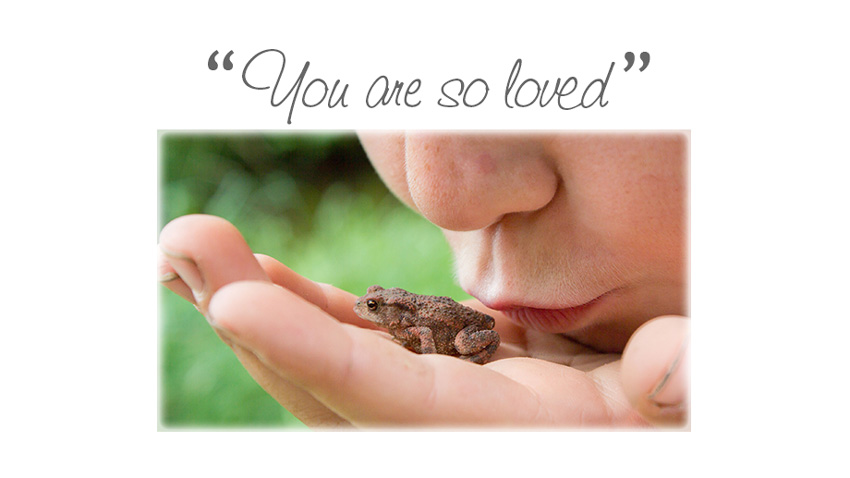

<div class="container content-md">
  <div class="row margin-bottom-30">
    <div class="col-md-8 mb-margin-bottom-30">
      <h2>
        You are incredible!
      </h2>
      <p>
        In reality you are eternal. You are the brightest of beacons on the darkest of
        nights. You are a miracle in action. You are Love in form. You are Divine, an
        emessary of light. You are Christ, the awakened one. You are a unique blend of
        Genius, creativity in physicality. You are whole and complete. You are perfect,
        just as you are, with nothing to change and nothing to fix. 
      </p>
      <p>
        That’s right, we are talking to you. The <em>you</em> who is reading these words &ndash;
        exactly where you are &ndash; regardless of what occurred in your childhood,
        how you feel or see yourself, or the challenges and suffering you may be
        experiencing.
      </p>
      <p>
        You are Loved &ndash; warts and all! 
      </p>
      <p style="margin-top: 20px; text-align: center;">
        
      </p>

      <p>
        At <em>Jalan Cinta Sanctuary</em> we aspire to a culture of Love, and it is by no means
        a simple or easy thing to live! Yet, it is also true that learning a spiritual
        teaching has no real effect if it is not <em>authentically lived</em>. 
      </p>
      <p>
      There are many teachings, many teachers, many pathways. At <em>Jalan Cinta
        Sanctuary</em>, we give our primary focus to the lived reality of the teachings
        because this place where, “the rubber hits the road” offers our greatest
        opportunity for growth.
      </p>
      <h2>
        So what are the teachings?
      </h2>
      <p>
        At <em>Jalan Cinta Sanctuary</em> we embrace all genuine teachings that support us to
        dive deep within our own being and explore what is really running the show. 
      </p>

      <p>
        We incorporate wisdom from mystic sages of the ages: The great spiritual
        teachers like Jesus (Jeshua) and Buddha and the best of psychology from Jung,
        Grof and others. The genius of spiritual teachings in our present time like Way
        of Mastery, A Course in Miracles, Eckhart Tolle, Paul Tuttle, the Hendricks,
        the Work of Byron Katie, Cheri Huber, Paul Ferrini and others along with the
        science of the brain, neurobiology, neuroplasticity, epigenetics and more!
      </p>

      <p>
        Many teachers will come and share their offerings in workshops, retreats and
        events.
      </p>

      <p>
        <em>Jalan Cinta Sanctuary</em> will also develop a series of signature courses,
        retreats, activities and events. Our signature courses will be offered both
        onsite and online. Our focus is inherently practical &ndash; grass roots level &ndash; the
        everyday reality of living as love in our own lives.
      </p>
      <p>
        This is the work of turning the pointed finger back to oneself, not to condemn,
        judge or blame, but to explore our own consciousness and take responsibility
        for our own life. When this key element is genuinely embraced it is a truly
        liberating moment!
      </p>
      <p>
        It is the path of true forgiveness and seeing the perfection in everyone, of
        embracing and loving what is arising now, of learning to accept and love the
        body, of seeing the innocence and miracle of creation, and of gratitude for
        it all!
      </p>
      <p>
        This focus is brought to everything at the Sanctuary: how it is operated, how
        decisions are made, how we each as individuals – residents, visitors, staff
        (and the Sanctuary’s pet rabbit) – interact with each other. 
      </p>
      <p>
        The Sanctuary is a place where we are each other’s teacher as we learn together
        to live as Love. Gritty. Real. And sometimes not pretty as the defenses against
        our own humanity and our Oneness are released.
      </p>
      <h2>
        There is only one goal.
      </h2>
      <p>
        To Love! To Love so fully that we wake up! We wake up, remember the truth and
        live from the reality of Oneness, so that the Divine can live <em>“where once
        I thought I lived.”</em> In other words, to incarnate our own Divinity. 
      </p>
      <p>
        Life wants you! &ndash; fully, wholly, embracing “what is” as it unfolds itself. Will
        you come out and play? 
      </p>
    </div>
    <div class="col-md-4 mb-margin-bottom-30">
      <blockquote class="quote-v2">
        <p>
          I have been a seeker and I still am, but I stopped asking the books and the
          stars. I started listening to the teaching of my soul.
        </p>
        <small>
          Rumi
        </small>
      </blockquote>
      <blockquote class="quote-v2">
        <p>
          Children are not lumps of clay and we are not sculptors. Children are
          seedlings and we are gardeners. 
        </p>
        <small>Richard Eyre</small>
      </blockquote>
      <blockquote class="quote-v2">
        <p>
          In this very breath that we take now lies the secret that all great teachers
          try to tell us.
        </p>
        <small>Peter Matthiesen</small>
      </blockquote>
      <blockquote class="quote-v2">
        <p>
          If the only prayer you ever said in your life was “thank you”, that would suffice.
        </p>
        <small>Meister Eckhart</small>
      </blockquote>
      <blockquote class="quote-v2">
        <p>
          &hellip;the Mystic Lover is one who is cultivating a way of being that is forever in
          love with the Mystery, which means living in wonder, never being finished,
          never living in a closed box.
        </p>
        <small>
          Jayem
        </small>
      </blockquote>
      <blockquote class="quote-v2">
        <p>
          Love cures people, both the ones who give it and the ones who receive it. 
        </p>
        <small>
          Karl Menninger
        </small>
      </blockquote>
      <blockquote class="quote-v2">
        <p>
          When you love everything you think, you love everyone you meet. 
        </p>
        <small>
          Byron Katie
        </small>
      </blockquote>
    </div>
  </div>
</div>


